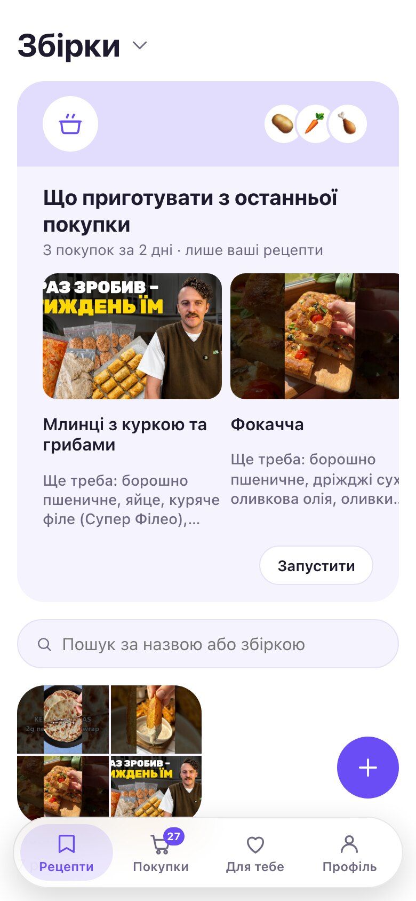
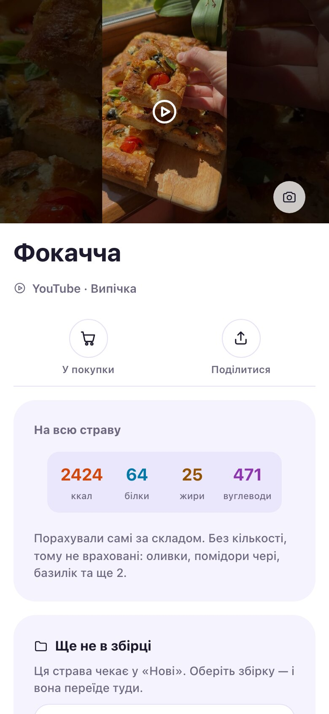
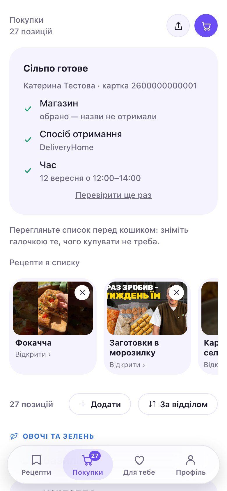
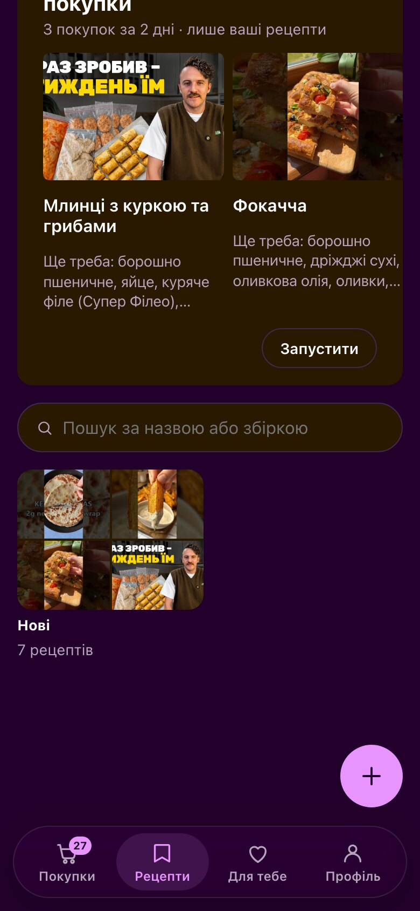
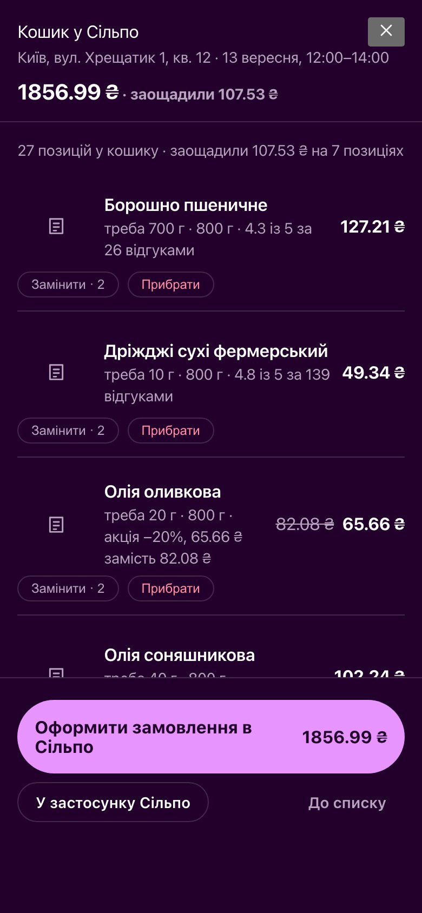
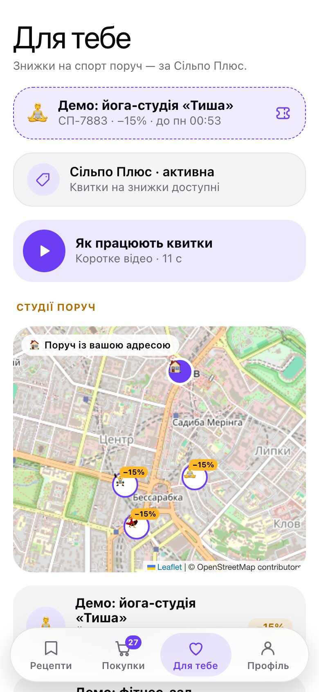
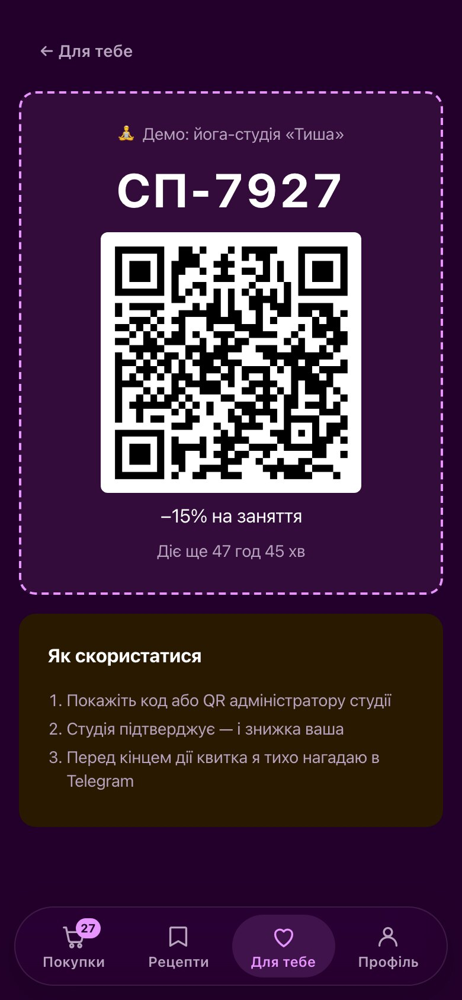

ВайбМІ — і ти задоволена!
Автоматизуй рутину —
звільни час для себе
Рецепти звідусіль, кошик у Сільпо і знижки на спорт поруч — в одному місці. ВайбМІ сама збирає, рахує й нагадує, а ти лише обираєш.
- Посилання
- YouTube
- TikTok
- Рукопис бабусі
- Голосове
Для зайнятих жінок, які все одно хочуть теплу сімейну вечерю




Подивись, як це працює
Менше рутини — більше часу на себе
Проблема
Купуємо «про всяк випадок» —
викидаємо через тиждень
Як зазвичай
- Рецепти розкидані по чатах і закладках
- У магазин — без списку
- Купуєш те, що вже є вдома
- Половина — у смітник
- Знову «що на вечерю?»
Зі ВайбМІ
- Усі рецепти в одній колекції
- Список сам, голосом або з рецептів
- Кошик у Сільпо за один дотик
- Страви з того, що вже купила
- Година на себе, а не в черзі
Рецепти
Твоя колекція — звідусіль
Надішли посилання, відео, фото сторінки зі зошита або голосове — повернеться рецепт з інгредієнтами й кроками.

Що приготувати з того, що купила
Щодня о 17:00 ВайбМІ сама дивиться, що ти купила, і пропонує страви з твоєї ж колекції — та каже, чого для них ще бракує.
Покупки
Скажи, що купити — кошик готовий
Список сам збирається з рецептів, голосу чи твоїх звичок — і стає кошиком у Сільпо за один дотик.
Один список за відділами
«Треба молоко, хліб і лимони» — голосом або текстом. Рядок на продукт, згруповано як у магазині.

Для тебе
Замість черги — спорт поруч
Поки покупки їдуть до тебе, візьми знижку на заняття в студії поруч — з Сільпо Плюс.
Квиток на −15% за один дотик
Студії на мапі поруч із твоєю адресою. Бери квиток — покажи код або QR у студії, і знижка твоя.
Студії на знімках — демо: таких місць не існує, знижки показано як приклад.


Чесно
Чого ВайбМІ не робить
Ніколи не платить за тебе
Збирає кошик і дає посилання. Оплата — твоя.
Не вигадує рецептів
Страви — лише з твоєї колекції. Немає тексту — попросить.
Склад — підказка, не гарантія
Алергія? Звіряй із упаковкою.
Демо позначено як демо
Студії-приклади підписані «Демо» — у застосунку й тут.
ВайбМІ і ти задоволена
Надішли боту перше посилання — рецепт з’явиться за кілька секунд.